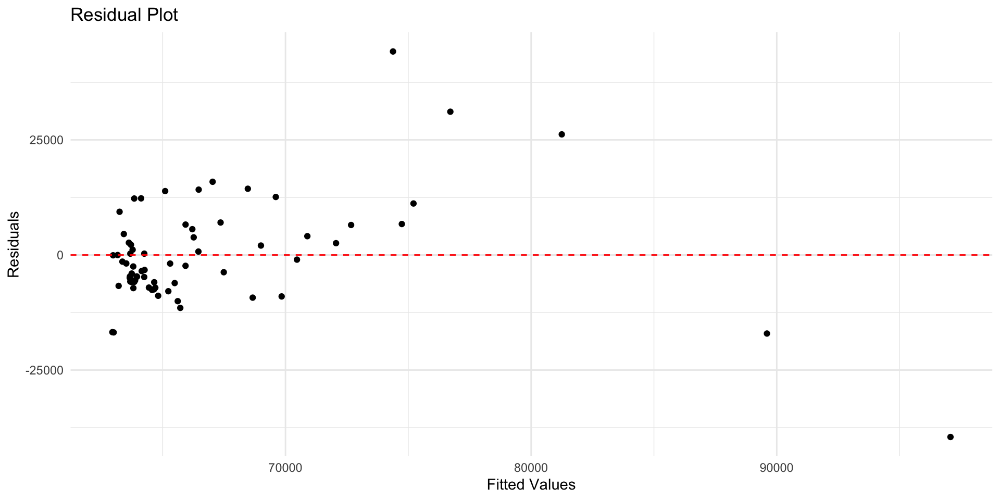
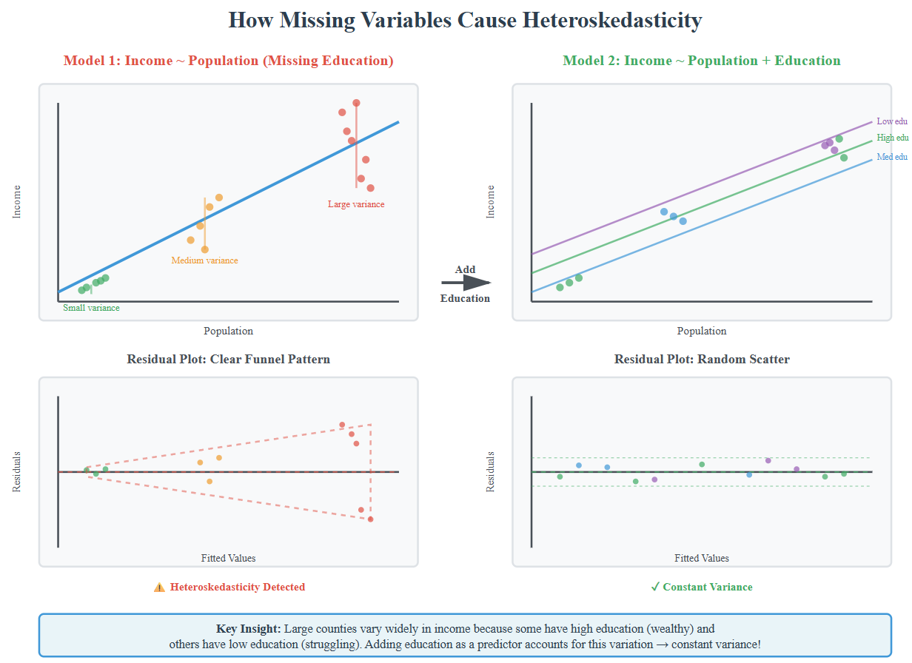
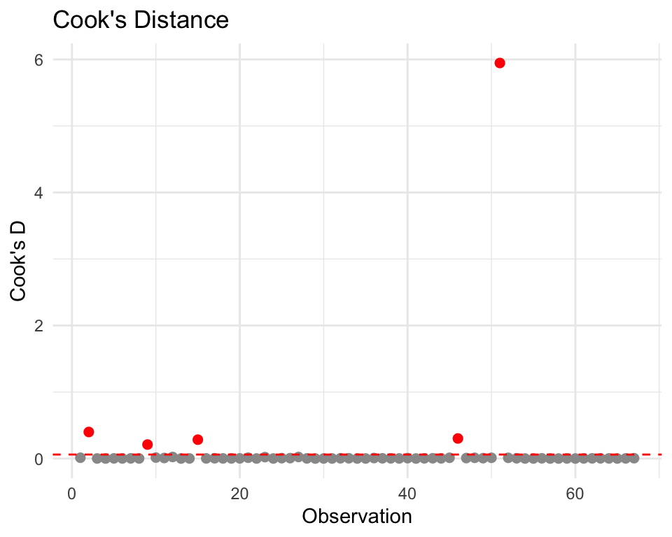

t-statistic: How many standard errors away from 0?
Bigger |t| = more confidence the relationship is real
p-value: Probability of seeing our estimate if H₀ is true
Small p → reject H₀, conclude relationship exists
Model Evaluation
How well does it fit the data we used? (in-sample fit using R²)
How well would it predict new data? (out-of-sample performance)
Checking Assumptions: Plots reveal what R^2 hides
Assumption 1: Linear Relationship
Check with Residual Plot
Residuals = observed − fitted. They’re your best proxy for the error term. Good models leave residuals that look like random noise.
Assumption 2: Constant Variance
Check heteroscedasticity (i.e. variance changes across X
Impact: standard errors are wrong -> p values are misleading
Assumption 3: Normality of Residuals
Check with Q-Q Plot (quantile-quantile plot) of residuals
Important for confidence & prediction intervals
Needed for valid hypothesis tests (t-test and F-test)
Assumption 4: No Multicollinearity
Coefficients become unstable and hard to interpret
Assumption 5: No Influential Outliers
Influential Outliers: those with high leverage and large residuals
Visual Diagnostic using Cook’s Distance (Cook’s D)
Improving the Model
Adding more predictors
Log Transformations
Categorical Variables
Coding Techniques
Linear Regression Train/Test Split
Code
set.seed(123)n <-nrow(pa_data)# 70% training, 30% testingtrain_indices <-sample(1:n, size =0.7* n)train_data <- pa_data[train_indices, ]test_data <- pa_data[-train_indices, ]# Fit on training data onlymodel_train <-lm(median_incomeE ~ total_popE, data = train_data)# Predict on test datatest_predictions <-predict(model_train, newdata = test_data)
pa_data$residuals <-residuals(model1)pa_data$fitted <-fitted(model1)ggplot(pa_data, aes(x = fitted, y = residuals)) +geom_point() +geom_hline(yintercept =0, color ="red", linetype ="dashed") +labs(title ="Residual Plot", x ="Fitted Values", y ="Residuals") +theme_minimal()
Residuals vs Fitted

Goal: a random, horizontal band around 0. Residual plots should show random scatter - any pattern means your model is missing something systematic
Red flags:
Curvature → missing nonlinear term (try polynomials/splines or transform xxx).
Funnel/wedge shape → heteroskedasticity (use log/Box–Cox on yyy, weighted least squares, or robust SEs).
Clusters/bands → omitted categorical/group effects or interaction terms.
Constant Variance and Heteroskedacity
Heteroskedasticity is a condition in regression analysis where the variance of the error terms is not constant but changes as the value of one or more independent variables changes
Model fits well for some values (e.g., small counties) but poorly for others (large counties)
May indicate missing variables that matter more at certain X values
Ask: “What’s different about observations with large residuals?”

Formal Test: Breusch-Pagan
Code
library(lmtest) bptest(model1)
Interpretation:
p > 0.05: Constant variance assumption OK
p < 0.05: Evidence of heteroscedasticity
If detected, solutions:
Transform Y (try log(income))
Robust standard errors
Add missing variables
Accept it (point predictions still OK for prediction goals)
library(car)vif(model1) # Variance Inflation Factor# Rule of thumb: VIF > 10 suggests problems# Not relevant with only 1 predictor!
Influential Outliers – Cook’s D > 4/n

Questions & Challenges
I am also interested in learning more about non-parametric approaches in future weeks
Connections to Policy
It is important to understand the assumptions behind a model. For example, heteroskedasticity is often an indicator of model misspecification – it indicates missing variables that matter more at certain X values. Population alone predicts income well in rural counties, but large urban counties need additional variables (education, industry) to predict accurately.
Reflection
Excited to put these skills to the test with the midterm home price prediction challenge!